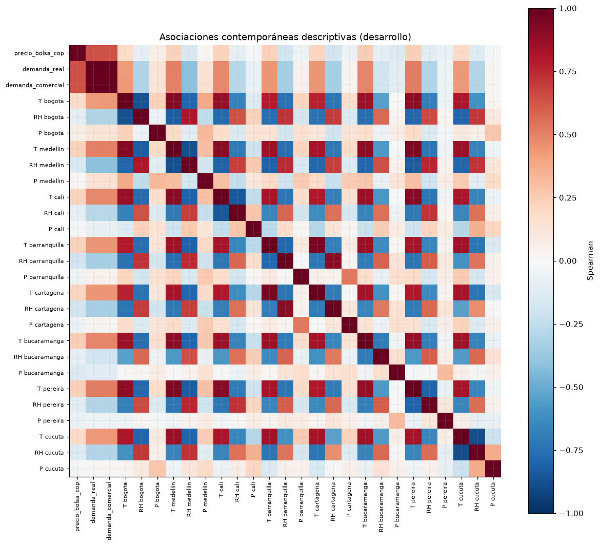
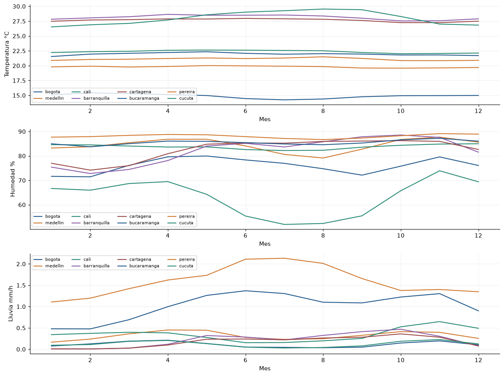
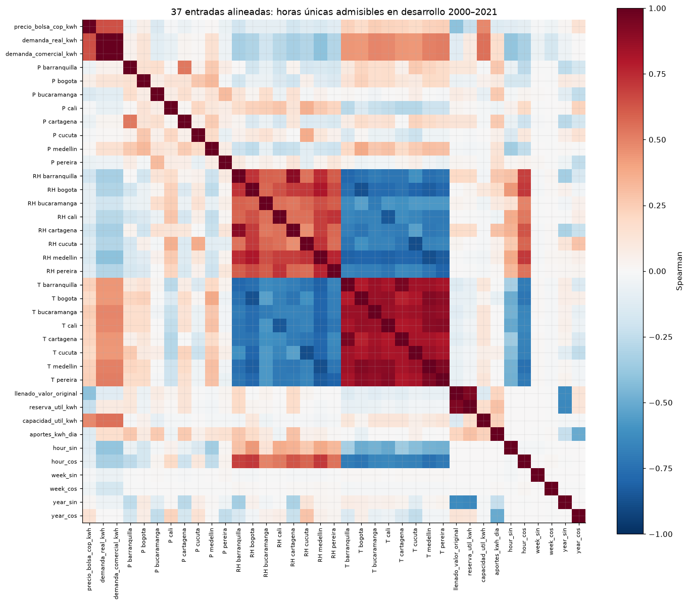

6. Demanda, clima e hidrología#
El análisis numérico utiliza el periodo completo de desarrollo 2000–2021. Los ajustes de escaladores y modelos se realizan dentro de cada fold.
Se estiman asociaciones contemporáneas, asociaciones con covariables rezagadas 24 horas y acumulados hidrológicos retrospectivos. La información mutua se calcula sobre una muestra determinista de 12.000 horas de desarrollo; las correlaciones y los resúmenes utilizan todas las observaciones disponibles de 2000–2021. Estas medidas describen dependencias estadísticas y orientan la representación multivariada.
Las ocho ciudades se conservan por separado para representar la heterogeneidad meteorológica. El objetivo de pronóstico es una serie nacional. La precipitación urbana caracteriza las ubicaciones seleccionadas; representar la oferta hidroeléctrica mediante lluvia requiere observaciones adicionales en las cuencas aportantes.
%matplotlib inline
from pathlib import Path
ROOT = next(
directory for directory in [Path.cwd(), *Path.cwd().parents]
if (directory / "data/manifest.json").exists()
)
from IPython.display import Markdown, display
import datetime as dt
import hashlib
import json
from sklearn.feature_selection import mutual_info_regression
import numpy as np
import pandas as pd
import matplotlib.pyplot as plt
import re
RESULTS = ROOT / 'results'
SEED = 11037
TARGET = 'precio_bolsa_cop_kwh'
ALLOWED_SOURCES = {'El Tiempo', 'El Espectador', 'Semana', 'Portafolio', 'La República', 'El Colombiano', 'Dinero', 'IDEAM', 'XM'}
EDA_SPLITS = {'train': (2000, 2017), 'validation': (2018, 2021), 'test': (2022, 2025)}
SPLITS = EDA_SPLITS
TIME = 'timestamp_start_colombia'
WEATHER_PREFIXES = ('temperature_2m_c_', 'relative_humidity_2m_pct_', 'precipitation_preceding_hour_mm_')
CITIES = {'bogota', 'medellin', 'cali', 'barranquilla', 'cartagena', 'bucaramanga', 'pereira', 'cucuta'}
NUMERIC_E1 = {TARGET, 'demanda_real_kwh', 'demanda_comercial_kwh', 'llenado_valor_original', 'reserva_util_kwh', 'capacidad_util_kwh', 'aportes_kwh_dia'}
PIPELINE_DEFAULTS = {'method': 'split_train_val_forwardChaining', 'n_splits': 5, 'development_start': '2000-01-01T00:00:00-05:00', 'validation_start': '2018-01-01T00:00:00-05:00', 'development_end_exclusive': '2022-01-01T00:00:00-05:00', 'test_start': '2022-01-01T00:00:00-05:00', 'test_end_exclusive': '2026-01-01T00:00:00-05:00', 'lookback_hours': 168, 'horizon_hours': 24, 'stride_hours': 24, 'hourly_release_lag_hours': 24, 'hydrology_release_lag_days': 2, 'include_calendar': True, 'seed': 11037, 'availability_scenario': 'retrospective_assumed_release_lags'}
RESULTS.mkdir(exist_ok=True)
(RESULTS / 'figures').mkdir(exist_ok=True)
(RESULTS / 'tables').mkdir(exist_ok=True)
plt.rcParams.update({'figure.figsize': (11, 4.4), 'figure.dpi': 110, 'savefig.dpi': 160, 'axes.spines.top': False, 'axes.spines.right': False, 'axes.grid': True, 'grid.alpha': 0.18, 'axes.prop_cycle': plt.cycler(color=['#245b8d', '#d17a32', '#2b8c77', '#8c5da8', '#9a4949'])})
pd.set_option('display.max_rows', 35)
pd.set_option('display.max_columns', 14)
pd.set_option('display.float_format', lambda x: f'{x:.5g}')
def aware(value):
parsed = dt.datetime.fromisoformat(value.replace('Z', '+00:00'))
if parsed.tzinfo is None:
raise ValueError('Timestamp must have an explicit timezone')
return parsed
def eligible(record, origin):
cutoff = aware(origin)
if (record.get('source') or record.get('medium')) not in ALLOWED_SOURCES:
return False
if record.get('availability_status') != 'verified_archived_version':
return False
if record.get('availability_proof') != 'wayback_payload_digest_and_capture':
return False
clean_flag = record.get('quarantined', False) in (False, 0, None, '', '0', 'false', 'False')
if not re.fullmatch('[0-9a-f]{64}', record.get('version_sha256') or '') or not clean_flag:
return False
available = record.get('available_at_verified')
captured = record.get('capture_at_verified')
if not available or not captured:
return False
return aware(captured) <= aware(available) <= cutoff
def split_train_val_forwardChaining(sequence, numInputs, numOutputs, numJumps):
""" Returns sets to train and cross-validate a model using forward chaining technique
Parameters:
sequence (array) : Full training dataset
numInputs (int) : Number of inputs X and Xcv used at each training and validation
numOutputs (int) : Number of outputs y and ycv used at each training and validation
numJumps (int) : Number of sequence samples to be ignored between (X,y) sets
Returns:
X (2D array) : Array of numInputs arrays used for training
y (2D array) : Array of numOutputs arrays used for training
Xcv (2D array) : Array of numInputs arrays used for cross-validation
ycv (2D array) : Array of numOutputs arrays used for cross-validation
Fuente: timeseries-cv 0.1.5; licencia original:
MIT License
Copyright (c) 2021 DidierRLopes
Permission is hereby granted, free of charge, to any person obtaining a copy
of this software and associated documentation files (the "Software"), to deal
in the Software without restriction, including without limitation the rights
to use, copy, modify, merge, publish, distribute, sublicense, and/or sell
copies of the Software, and to permit persons to whom the Software is
furnished to do so, subject to the following conditions:
The above copyright notice and this permission notice shall be included in all
copies or substantial portions of the Software.
THE SOFTWARE IS PROVIDED "AS IS", WITHOUT WARRANTY OF ANY KIND, EXPRESS OR
IMPLIED, INCLUDING BUT NOT LIMITED TO THE WARRANTIES OF MERCHANTABILITY,
FITNESS FOR A PARTICULAR PURPOSE AND NONINFRINGEMENT. IN NO EVENT SHALL THE
AUTHORS OR COPYRIGHT HOLDERS BE LIABLE FOR ANY CLAIM, DAMAGES OR OTHER
LIABILITY, WHETHER IN AN ACTION OF CONTRACT, TORT OR OTHERWISE, ARISING FROM,
OUT OF OR IN CONNECTION WITH THE SOFTWARE OR THE USE OR OTHER DEALINGS IN THE
SOFTWARE.
The MIT License (MIT)
Copyright (c) 2019 Didier Rodrigues Lopes
Permission is hereby granted, free of charge, to any person obtaining a copy
of this software and associated documentation files (the "Software"), to deal
in the Software without restriction, including without limitation the rights
to use, copy, modify, merge, publish, distribute, sublicense, and/or sell
copies of the Software, and to permit persons to whom the Software is
furnished to do so, subject to the following conditions:
The above copyright notice and this permission notice shall be included in all
copies or substantial portions of the Software.
THE SOFTWARE IS PROVIDED "AS IS", WITHOUT WARRANTY OF ANY KIND, EXPRESS OR
IMPLIED, INCLUDING BUT NOT LIMITED TO THE WARRANTIES OF MERCHANTABILITY,
FITNESS FOR A PARTICULAR PURPOSE AND NONINFRINGEMENT. IN NO EVENT SHALL THE
AUTHORS OR COPYRIGHT HOLDERS BE LIABLE FOR ANY CLAIM, DAMAGES OR OTHER
LIABILITY, WHETHER IN AN ACTION OF CONTRACT, TORT OR OTHERWISE, ARISING FROM,
OUT OF OR IN CONNECTION WITH THE SOFTWARE OR THE USE OR OTHER DEALINGS IN THE
SOFTWARE.
"""
X, y, Xcv, ycv = (dict(), dict(), dict(), dict())
j = 2
while 1:
start_ix = 0
end_ix = 0
startCv_ix = 0
endCv_ix = 0
X_it, y_it, Xcv_it, ycv_it = (list(), list(), list(), list())
i = 0
while i < j:
start_ix = numJumps * i
end_ix = start_ix + numInputs
seq_x = sequence[start_ix:end_ix]
X_it.append(seq_x)
seq_y = sequence[end_ix:end_ix + numOutputs]
y_it.append(seq_y)
i += 1
if end_ix + numInputs + numOutputs > len(sequence):
break
startCv_ix = end_ix
endCv_ix = end_ix + numInputs
seq_xcv = sequence[startCv_ix:endCv_ix]
Xcv_it.append(seq_xcv)
seq_ycv = sequence[endCv_ix:endCv_ix + numOutputs]
ycv_it.append(seq_ycv)
X[j - 2] = np.array(X_it)
y[j - 2] = np.array(y_it)
Xcv[j - 2] = np.array(Xcv_it)
ycv[j - 2] = np.array(ycv_it)
j += 1
if len(X) == 0 or len(Xcv) == 0:
print('The sequence provided does not has size enough to populate the return arrays')
return (X, y, Xcv, ycv)
def validate_development_index(index, config):
index = pd.DatetimeIndex(index)
if index.tz is None:
raise ValueError('El índice debe tener zona horaria.')
index = index.tz_convert('America/Bogota')
if len(index) < 2 or not index.is_monotonic_increasing or index.has_duplicates:
raise ValueError('Índice temporal desordenado, duplicado o insuficiente.')
if not np.all(np.diff(index.as_unit('ns').asi8) == pd.Timedelta(hours=1).value):
raise ValueError('El calendario horario contiene huecos.')
if index[0] < pd.Timestamp(config['development_start']) or index[-1] >= pd.Timestamp(config['development_end_exclusive']):
raise PermissionError('La preparación sólo admite el periodo de desarrollo.')
return index
def forward_chaining_folds(index, config, input_usable=None, target_usable=None):
"""Plan temporal por bloques; ventanas supervisadas completas y sin etiquetas compartidas."""
index = validate_development_index(index, config)
length = len(index)
lookback = config['lookback_hours']
horizon = config['horizon_hours']
origins = np.arange(lookback, length - horizon + 1, config['stride_hours'], dtype=np.int64)
origins = origins[index[origins].hour == 0]
if input_usable is not None:
flags = np.asarray(input_usable, dtype=bool)
if flags.shape != (length,):
raise ValueError('Máscara de entradas incompatible')
bad = np.r_[0, np.cumsum(~flags)]
origins = origins[bad[origins] - bad[origins - lookback] == 0]
if target_usable is not None:
flags = np.asarray(target_usable, dtype=bool)
if flags.shape != (length,):
raise ValueError('Máscara de etiquetas incompatible')
bad = np.r_[0, np.cumsum(~flags)]
origins = origins[bad[origins + horizon] - bad[origins] == 0]
initial = origins[index[origins] < pd.Timestamp(config['validation_start'])]
eligible = origins[index[origins] >= pd.Timestamp(config['validation_start'])]
if len(initial) < 3 or len(eligible) < config['n_splits']:
raise ValueError('Datos insuficientes para los folds.')
validation_blocks = np.array_split(eligible, config['n_splits'])
train_x, train_y, val_x, val_y = split_train_val_forwardChaining(np.arange(config['n_splits'] + 3), 1, 1, 1)
if len(val_y) != config['n_splits']:
raise AssertionError('Número inesperado de folds del backend')
folds = []
for key in sorted(val_y):
block = int(val_y[key].ravel()[0])
block_id = block - 3
past_blocks = np.unique(np.r_[train_x[key].ravel(), train_y[key].ravel()])
if past_blocks.max() >= block:
raise AssertionError('El backend incluyó bloques futuros')
start = int(validation_blocks[block_id][0])
stop = int(validation_blocks[block_id + 1][0]) if block_id + 1 < len(validation_blocks) else length
train = origins[origins + horizon <= start]
validation = validation_blocks[block_id]
validation = validation[validation + horizon <= stop]
if not len(train) or not len(validation):
raise ValueError('Fold vacío tras la purga de etiquetas')
assert train[-1] + horizon <= validation[0]
digest = hashlib.sha256(train.astype('<i8').tobytes() + validation.astype('<i8').tobytes()).hexdigest()
folds.append(dict(fold=len(folds) + 1, train_origins=train, validation_origins=validation, validation_block=block, indices_sha256=digest))
return folds
def load_numeric(split='train', table='hourly', *, allow_test=False):
if split not in SPLITS:
raise ValueError('Unknown split')
if split == 'test' and (not allow_test):
raise PermissionError('El EDA no puede consultar valores de prueba.')
a, b = SPLITS[split]
folder = 'hourly' if table == 'hourly' else 'hydrology'
frame = pd.concat([pd.read_csv(ROOT / f'data/numeric/{folder}/{year}.csv.gz') for year in range(a, b + 1)], ignore_index=True)
if table == 'hourly':
frame.index = pd.DatetimeIndex(pd.to_datetime(frame[TIME], utc=True)).tz_convert('America/Bogota')
else:
frame.index = pd.DatetimeIndex(pd.to_datetime(frame['date'])).tz_localize('America/Bogota')
frame.index.name = 'tiempo_colombia'
return frame
def load_development_data(table='hourly'):
return pd.concat([load_numeric('train', table=table), load_numeric('validation', table=table)]).sort_index()
def assert_e1_features(names):
for name in names:
if name in NUMERIC_E1:
continue
if any((name == prefix + city for prefix in WEATHER_PREFIXES for city in CITIES)):
continue
if name in {'hour_sin', 'hour_cos', 'week_sin', 'week_cos', 'year_sin', 'year_cos'}:
continue
raise ValueError('E1 sólo admite las variables numéricas declaradas: ' + name)
return True
def numeric_feature_frame(hourly, hydrology, config):
index = validate_development_index(hourly.index, config)
if not hydrology.index.is_monotonic_increasing or hydrology.index.has_duplicates:
raise ValueError('Índice hidrológico no válido.')
if hydrology.index.tz is None or (len(hydrology) and hydrology.index[-1] >= pd.Timestamp(config['development_end_exclusive'])):
raise PermissionError('Hidrología fuera del periodo de desarrollo o sin zona horaria.')
columns = [TARGET, 'demanda_real_kwh', 'demanda_comercial_kwh']
columns += sorted((c for c in hourly.columns if c.startswith(WEATHER_PREFIXES)))
features = hourly[columns].shift(config['hourly_release_lag_hours']).copy()
hydro_columns = ['llenado_valor_original', 'reserva_util_kwh', 'capacidad_util_kwh', 'aportes_kwh_dia']
released = hydrology[hydro_columns].copy()
released.index = released.index + pd.Timedelta(days=config['hydrology_release_lag_days'])
features = features.join(released.reindex(index, method='ffill'))
if config['include_calendar']:
phases = {'hour': index.hour / 24, 'week': (index.day_of_week + index.hour / 24) / 7, 'year': (index.day_of_year - 1 + index.hour / 24) / np.where(index.is_leap_year, 366, 365)}
for name, phase in phases.items():
features[name + '_sin'] = np.sin(2 * np.pi * phase)
features[name + '_cos'] = np.cos(2 * np.pi * phase)
assert_e1_features(features.columns)
return features
def pipeline_config(overrides=None):
config = dict(PIPELINE_DEFAULTS)
if overrides:
unknown = set(overrides) - set(config)
if unknown:
raise ValueError('Opciones desconocidas: ' + str(sorted(unknown)))
config.update(overrides)
for field in ['n_splits', 'lookback_hours', 'horizon_hours', 'stride_hours']:
if not isinstance(config[field], int) or isinstance(config[field], bool) or config[field] < 1:
raise ValueError('Se requiere un entero positivo: ' + field)
for field in ['hourly_release_lag_hours', 'hydrology_release_lag_days']:
if not isinstance(config[field], int) or isinstance(config[field], bool) or config[field] < 0:
raise ValueError('Rezago inválido: ' + field)
if config['hydrology_release_lag_days'] < 1:
raise ValueError('La hidrología diaria requiere al menos el cierre del día.')
for field in ['development_start', 'validation_start', 'development_end_exclusive', 'test_start', 'test_end_exclusive']:
if pd.Timestamp(config[field]).tzinfo is None:
raise ValueError('Se requiere zona horaria: ' + field)
if config['method'] != 'split_train_val_forwardChaining':
raise ValueError('Método no autorizado')
if pd.Timestamp(config['test_start']) != pd.Timestamp(PIPELINE_DEFAULTS['test_start']) or config['test_end_exclusive'] != PIPELINE_DEFAULTS['test_end_exclusive']:
raise ValueError('El periodo de prueba está congelado.')
if not pd.Timestamp(config['development_start']) < pd.Timestamp(config['validation_start']) < pd.Timestamp(config['development_end_exclusive']) <= pd.Timestamp(config['test_start']):
raise ValueError('Cortes temporales inválidos')
if config['stride_hours'] % 24:
raise ValueError('Los orígenes deben conservar el paso diario.')
return config
def build_training_pipeline(config=None, hourly=None, hydrology=None):
config = pipeline_config(config)
hourly = load_development_data() if hourly is None else hourly
hydrology = load_development_data('hydrology') if hydrology is None else hydrology
features = numeric_feature_frame(hourly, hydrology, config)
target = hourly[TARGET].copy()
usable = np.isfinite(features.to_numpy()).all(axis=1)
folds = forward_chaining_folds(features.index, config, usable, np.isfinite(target.to_numpy()))
return dict(config=config, features=features, target=target, folds=folds)
def load_pipeline_config(path=None):
path = ROOT / 'configs/training_pipeline.json' if path is None else path
return pipeline_config(json.loads(path.read_text(encoding='utf-8')))
def load_eda_development(table='hourly'):
"""Desarrollo completo; no cambia las particiones que usa el entrenamiento."""
config = load_pipeline_config()
frame = load_development_data(table)
if len(frame) and frame.index.max() >= pd.Timestamp(config['test_start']):
raise PermissionError('La fuente contiene fechas de prueba.')
start = pd.Timestamp(config['development_start'])
end = pd.Timestamp(config['development_end_exclusive'])
frame = frame.loc[(frame.index >= start) & (frame.index < end)]
if frame.empty or frame.index.max() >= pd.Timestamp(config['test_start']):
raise PermissionError('El EDA sólo admite desarrollo anterior a prueba.')
return frame
def used_window_rows(origins, length, lookback, horizon):
"""Filas únicas y multiplicidad de entradas/etiquetas sin materializar ventanas."""
origins = np.asarray(origins, dtype=np.int64)
if origins.ndim != 1 or not len(origins):
raise ValueError('Se requieren orígenes unidimensionales no vacíos.')
if lookback < 1 or horizon < 1 or np.any(origins < lookback) or np.any(origins + horizon > length):
raise ValueError('Una ventana atraviesa los límites del calendario.')
def counts(left, right):
delta = np.zeros(length + 1, dtype=np.int64)
np.add.at(delta, left, 1)
np.add.at(delta, right, -1)
return np.cumsum(delta[:-1])
inputs = counts(origins - lookback, origins)
labels = counts(origins, origins + horizon)
return (inputs, labels)
frame = load_eda_development()
hydro = load_eda_development(table='hydrology')
numeric = frame.select_dtypes('number').drop(columns=['xm_hour'], errors='ignore')
corr = numeric.corr(method='spearman')
fig, ax = plt.subplots(figsize=(11, 10))
im = ax.imshow(corr, vmin=-1, vmax=1, cmap='RdBu_r')
labels = [c.replace('relative_humidity_2m_pct_', 'RH ').replace('temperature_2m_c_', 'T ').replace('precipitation_preceding_hour_mm_', 'P ').replace('_kwh', '') for c in corr]
ax.set_xticks(range(len(corr)), labels, rotation=90, fontsize=7)
ax.set_yticks(range(len(corr)), labels, fontsize=7)
fig.colorbar(im, ax=ax, label='Spearman')
ax.set_title('Asociaciones contemporáneas descriptivas (desarrollo)')
figure(fig, 'correlaciones_desarrollo')

Interpretación. Las dos medidas de demanda presentan elevada asociación entre sí y relación positiva con el precio. Las temperaturas comparten un bloque de correlaciones positivas y se oponen a la humedad; la precipitación muestra asociaciones más débiles con el objetivo, lo que evidencia distinta información y redundancia entre covariables.
table(corr[[TARGET]].sort_values(TARGET), 'correlacion_contemporanea_desarrollo')
| precio_bolsa_cop_kwh | |
|---|---|
| relative_humidity_2m_pct_barranquilla | -0.18964 |
| relative_humidity_2m_pct_cartagena | -0.18329 |
| relative_humidity_2m_pct_medellin | -0.15601 |
| precipitation_preceding_hour_mm_bucaramanga | -0.14346 |
| relative_humidity_2m_pct_cucuta | -0.12771 |
| relative_humidity_2m_pct_pereira | -0.11528 |
| relative_humidity_2m_pct_bucaramanga | -0.088227 |
| relative_humidity_2m_pct_cali | -0.086752 |
| relative_humidity_2m_pct_bogota | -0.086103 |
| precipitation_preceding_hour_mm_pereira | -0.066521 |
| precipitation_preceding_hour_mm_cartagena | -0.058812 |
| precipitation_preceding_hour_mm_barranquilla | -0.051152 |
| precipitation_preceding_hour_mm_cucuta | -0.011483 |
| precipitation_preceding_hour_mm_cali | -0.0078953 |
| precipitation_preceding_hour_mm_medellin | 0.013681 |
| precipitation_preceding_hour_mm_bogota | 0.057011 |
| temperature_2m_c_bogota | 0.18317 |
| temperature_2m_c_cucuta | 0.19307 |
| temperature_2m_c_cartagena | 0.21721 |
| temperature_2m_c_cali | 0.22321 |
| temperature_2m_c_medellin | 0.22812 |
| temperature_2m_c_barranquilla | 0.23011 |
| temperature_2m_c_pereira | 0.23635 |
| temperature_2m_c_bucaramanga | 0.24777 |
| demanda_comercial_kwh | 0.63885 |
| demanda_real_kwh | 0.64207 |
| precio_bolsa_cop_kwh | 1 |
predictors = numeric.drop(columns=TARGET).shift(24)
aligned = predictors.join(frame[TARGET]).dropna()
rng = np.random.default_rng(SEED)
idx = np.sort(rng.choice(len(aligned), min(12000, len(aligned)), replace=False))
sample = aligned.iloc[idx]
mi = mutual_info_regression(sample.drop(columns=TARGET), sample[TARGET], n_neighbors=5, random_state=SEED)
lagged = pd.DataFrame({'spearman_rezago_24h': aligned.corr(method='spearman')[TARGET].drop(TARGET), 'informacion_mutua_muestra_desarrollo': mi}, index=predictors.columns).sort_values('spearman_rezago_24h')
table(lagged, 'asociaciones_rezagadas_desarrollo')
| spearman_rezago_24h | informacion_mutua_muestra_desarrollo | |
|---|---|---|
| relative_humidity_2m_pct_barranquilla | -0.19261 | 0.043141 |
| relative_humidity_2m_pct_cartagena | -0.18556 | 0.038304 |
| relative_humidity_2m_pct_medellin | -0.16088 | 0.024517 |
| precipitation_preceding_hour_mm_bucaramanga | -0.14919 | 0.032759 |
| relative_humidity_2m_pct_cucuta | -0.13415 | 0.033156 |
| relative_humidity_2m_pct_pereira | -0.11842 | 0.0069202 |
| relative_humidity_2m_pct_bucaramanga | -0.094557 | 0.013255 |
| relative_humidity_2m_pct_bogota | -0.091627 | 0.018885 |
| relative_humidity_2m_pct_cali | -0.088247 | 0.013143 |
| precipitation_preceding_hour_mm_pereira | -0.067975 | 0.018304 |
| precipitation_preceding_hour_mm_cartagena | -0.064507 | 0.014555 |
| precipitation_preceding_hour_mm_barranquilla | -0.057384 | 0.012862 |
| precipitation_preceding_hour_mm_cucuta | -0.018091 | 0.010046 |
| precipitation_preceding_hour_mm_cali | -0.014374 | 0.012685 |
| precipitation_preceding_hour_mm_medellin | 0.0039961 | 0.0079539 |
| precipitation_preceding_hour_mm_bogota | 0.048837 | 0.016712 |
| temperature_2m_c_bogota | 0.18285 | 0.031745 |
| temperature_2m_c_cucuta | 0.19604 | 0.036702 |
| temperature_2m_c_cartagena | 0.22232 | 0.046983 |
| temperature_2m_c_cali | 0.22498 | 0.031022 |
| temperature_2m_c_medellin | 0.22963 | 0.048145 |
| temperature_2m_c_barranquilla | 0.23461 | 0.041879 |
| temperature_2m_c_pereira | 0.2376 | 0.042925 |
| temperature_2m_c_bucaramanga | 0.25047 | 0.050404 |
| demanda_comercial_kwh | 0.62392 | 0.30311 |
| demanda_real_kwh | 0.6272 | 0.30463 |
x = numeric.drop(columns=TARGET)
std = x.std()
z = (x - x.mean()) / std.replace(0, np.nan)
matrix = z.dropna(axis=1).to_numpy()
condition = np.linalg.cond(matrix[::24])
gram = np.corrcoef(matrix[::24], rowvar=False)
vif = np.diag(np.linalg.pinv(gram))
table(pd.DataFrame({'VIF_aproximado': vif}, index=z.dropna(axis=1).columns).sort_values('VIF_aproximado', ascending=False), 'colinealidad_desarrollo')
| VIF_aproximado | |
|---|---|
| demanda_real_kwh | 1415.3 |
| demanda_comercial_kwh | 1414 |
| temperature_2m_c_barranquilla | 10.875 |
| temperature_2m_c_cartagena | 8.5492 |
| relative_humidity_2m_pct_barranquilla | 6.9684 |
| relative_humidity_2m_pct_cartagena | 4.6246 |
| temperature_2m_c_cucuta | 4.3457 |
| temperature_2m_c_cali | 4.22 |
| relative_humidity_2m_pct_cucuta | 3.8927 |
| temperature_2m_c_bucaramanga | 3.2817 |
| temperature_2m_c_pereira | 3.2557 |
| temperature_2m_c_medellin | 3.0304 |
| relative_humidity_2m_pct_cali | 2.6697 |
| temperature_2m_c_bogota | 2.2948 |
| relative_humidity_2m_pct_bucaramanga | 2.1097 |
| relative_humidity_2m_pct_pereira | 1.8 |
| relative_humidity_2m_pct_medellin | 1.7603 |
| relative_humidity_2m_pct_bogota | 1.5273 |
| precipitation_preceding_hour_mm_cartagena | 1.4635 |
| precipitation_preceding_hour_mm_bucaramanga | 1.3224 |
| precipitation_preceding_hour_mm_barranquilla | 1.2803 |
| precipitation_preceding_hour_mm_pereira | 1.1784 |
| precipitation_preceding_hour_mm_bogota | 1.1225 |
| precipitation_preceding_hour_mm_medellin | 1.1104 |
| precipitation_preceding_hour_mm_cucuta | 1.0982 |
| precipitation_preceding_hour_mm_cali | 1.0507 |
Número de condición de la matriz estandarizada diaria de covariables: 210.3. El VIF usa pseudoinversa si hay singularidad; se interpreta junto al número de condición, no como identificación causal.
daily = frame[TARGET].resample('D').mean()
h = hydro.select_dtypes('number')
changes = pd.DataFrame({'precio_diario': daily, 'reserva_rezago_1d': h['reserva_util_kwh'].shift(1), 'aportes_acumulados_7d_pasados': h['aportes_kwh_dia'].shift(1).rolling(7).sum(), 'cambio_reserva_7d_pasado': h['reserva_util_kwh'].shift(1) - h['reserva_util_kwh'].shift(8)})
table(changes.corr(method='spearman'), 'hidrologia_cambios_pasados_desarrollo')
| precio_diario | reserva_rezago_1d | aportes_acumulados_7d_pasados | cambio_reserva_7d_pasado | |
|---|---|---|---|---|
| precio_diario | 1 | -0.23569 | -0.15116 | -0.24923 |
| reserva_rezago_1d | -0.23569 | 1 | 0.35394 | 0.09316 |
| aportes_acumulados_7d_pasados | -0.15116 | 0.35394 | 1 | 0.82243 |
| cambio_reserva_7d_pasado | -0.24923 | 0.09316 | 0.82243 | 1 |
weather = []
for c in numeric:
if any((s in c for s in ['temperature', 'humidity', 'precipitation'])):
weather.append(dict(variable=c, media=numeric[c].mean(), sd=numeric[c].std(), p01=numeric[c].quantile(0.01), p99=numeric[c].quantile(0.99)))
table(pd.DataFrame(weather).set_index('variable'), 'heterogeneidad_ciudades_desarrollo')
| media | sd | p01 | p99 | |
|---|---|---|---|---|
| variable | ||||
| temperature_2m_c_bogota | 14.884 | 3.4523 | 9 | 22.6 |
| relative_humidity_2m_pct_bogota | 76.062 | 18.819 | 32 | 100 |
| precipitation_preceding_hour_mm_bogota | 0.11357 | 0.39781 | 0 | 1.8 |
| temperature_2m_c_medellin | 21.114 | 3.5114 | 15.7 | 29.2 |
| relative_humidity_2m_pct_medellin | 84.397 | 15.399 | 43 | 100 |
| precipitation_preceding_hour_mm_medellin | 0.31745 | 0.71837 | 0 | 3.5 |
| temperature_2m_c_cali | 22.363 | 2.8095 | 17.6 | 28.6 |
| relative_humidity_2m_pct_cali | 83.786 | 9.4603 | 59 | 98 |
| precipitation_preceding_hour_mm_cali | 0.34987 | 0.94161 | 0 | 4.6 |
| temperature_2m_c_barranquilla | 28.14 | 2.3415 | 24.3 | 33.8 |
| relative_humidity_2m_pct_barranquilla | 82.127 | 12.507 | 48 | 99 |
| precipitation_preceding_hour_mm_barranquilla | 0.21481 | 0.75274 | 0 | 3.7 |
| temperature_2m_c_cartagena | 27.665 | 1.6973 | 24.8 | 32 |
| relative_humidity_2m_pct_cartagena | 82.567 | 8.8668 | 54 | 94 |
| precipitation_preceding_hour_mm_cartagena | 0.1764 | 0.52962 | 0 | 2.6 |
| temperature_2m_c_bucaramanga | 21.954 | 2.1651 | 17.8 | 26.7 |
| relative_humidity_2m_pct_bucaramanga | 85.495 | 6.8177 | 66 | 98 |
| precipitation_preceding_hour_mm_bucaramanga | 1.0189 | 1.7142 | 0 | 9.2 |
| temperature_2m_c_pereira | 19.8 | 2.7555 | 14.9 | 26.1 |
| relative_humidity_2m_pct_pereira | 88.073 | 9.2737 | 61 | 100 |
| precipitation_preceding_hour_mm_pereira | 1.5951 | 1.5081 | 0 | 6.6 |
| temperature_2m_c_cucuta | 28.023 | 4.1174 | 21.2 | 37.5 |
| relative_humidity_2m_pct_cucuta | 63.248 | 19.749 | 24 | 96 |
| precipitation_preceding_hour_mm_cucuta | 0.12203 | 0.53059 | 0 | 1.8 |
fig, axes = plt.subplots(3, 1, figsize=(12, 9))
for ax, prefix, label in zip(axes, ['temperature', 'relative_humidity', 'precipitation'], ['Temperatura °C', 'Humedad %', 'Lluvia mm/h']):
cols = [c for c in numeric if c.startswith(prefix)]
means = numeric[cols].groupby(frame.index.month).mean()
means.columns = [c.rsplit('_', 1)[-1] for c in cols]
means.plot(ax=ax)
ax.set(xlabel='Mes', ylabel=label)
ax.legend(ncol=4, fontsize=7)
figure(fig, 'clima_por_ciudad_desarrollo')

Interpretación. Los perfiles distinguen la menor temperatura de Bogotá de las condiciones más cálidas del Caribe y Cúcuta. La humedad de Cúcuta disminuye especialmente a mitad de año y la precipitación presenta magnitudes y calendarios distintos entre ciudades; el promedio nacional ocultaría parte de esta heterogeneidad.
Implicaciones del análisis
Preprocesamiento: Conservar las ocho ciudades. Acumulados y cambios sólo hacia atrás; estandarización/selección sólo con train.
Arquitectura: Bloques numéricos de demanda, clima e hidrología y fusión aprendida; regularizar ante covariables redundantes.
Validación: Asociaciones contemporáneas y con rezago son EDA retrospectivo, no evidencia de información conocida ni ganancia fuera de muestra.
Riesgos: Demanda realizada del horizonte y clima futuro realizado producirían fuga. Un día de rezago hidrológico es ilustración, no un rezago de publicación certificado. Lluvia urbana no reemplaza lluvia de cuencas aportantes; esta última no está descargada.
6.1 Datos efectivos de entrenamiento#
Se describen las 37 entradas numéricas alineadas mediante el mismo constructor del entrenamiento: precio, dos demandas, 24 variables meteorológicas, cuatro hidrológicas y seis componentes cíclicas de calendario. Los resúmenes cuentan cada hora de entrada una vez; las ventanas superpuestas repiten esas filas durante el ajuste.
La auditoría reproduce los cinco folds y los contextos de 24, 72, 168 y 336 horas. La búsqueda comparte orígenes determinados por la ventana máxima. Se contrasta la cobertura con sus archivos de preparación y se resumen las filas admisibles de todo desarrollo bajo el contexto inicial de 168 horas. La descripción agregada no se utiliza para estimar el escalado de los folds.
config = load_pipeline_config()
pilot = build_training_pipeline(config)
search = build_training_pipeline(dict(config, lookback_hours=336))
features = pilot['features']
index = features.index
horizon = config['horizon_hours']
rows = []
coverage = []
saved_audit = json.loads((ROOT / 'results/variant_search/fold_audit.json').read_text(encoding='utf-8'))
for history in [24, 72, 168, 336]:
for fold in search['folds']:
train, valid = (fold['train_origins'], fold['validation_origins'])
train_inputs, train_labels = used_window_rows(train, len(index), history, horizon)
valid_inputs, valid_labels = used_window_rows(valid, len(index), history, horizon)
assert not np.any((train_labels > 0) & (valid_labels > 0))
assert index[np.flatnonzero(train_inputs)[-1]] < index[valid[0]]
record = next((a for a in saved_audit if a['lookback'] == history and a['fold'] == fold['fold']))
assert len(train) == record['n_train'] and len(valid) == record['n_validation']
assert str(index[valid[0]]) == record['validation_start']
assert list(features.columns) == record['feature_names']
train_values = pilot['target'].iloc[np.flatnonzero(train_labels)]
valid_values = pilot['target'].iloc[np.flatnonzero(valid_labels)]
rows.append(dict(historia_horas=history, fold=fold['fold'], ventanas_train=len(train), ventanas_validacion=len(valid), filas_entrada_train=int((train_inputs > 0).sum()), horas_etiqueta_train=int((train_labels > 0).sum()), entrada_desde=str(index[np.flatnonzero(train_inputs)[0]]), entrada_hasta=str(index[np.flatnonzero(train_inputs)[-1]]), etiquetas_train_hasta=str(index[np.flatnonzero(train_labels)[-1]]), validacion_desde=str(index[valid[0]]), media_precio_train=float(train_values.mean()), media_precio_validacion=float(valid_values.mean()), q99_precio_train=float(train_values.quantile(0.99)), q99_precio_validacion=float(valid_values.quantile(0.99))))
all_origins = np.unique(np.concatenate([search['folds'][0]['train_origins']] + [f['validation_origins'] for f in search['folds']]))
used, labels = used_window_rows(all_origins, len(index), history, horizon)
coverage.append(dict(historia_horas=history, ventanas_desarrollo=len(all_origins), filas_entrada_unicas=int((used > 0).sum()), horas_etiqueta_unicas=int((labels > 0).sum()), celdas_entrada_totales=int(used.sum() * features.shape[1]), multiplicidad_maxima_hora=int(used.max())))
table(pd.DataFrame(rows).set_index(['historia_horas', 'fold']), 'eda_entrenamiento_folds_contextos')
| ventanas_train | ventanas_validacion | filas_entrada_train | horas_etiqueta_train | entrada_desde | entrada_hasta | etiquetas_train_hasta | validacion_desde | media_precio_train | media_precio_validacion | q99_precio_train | q99_precio_validacion | ||
|---|---|---|---|---|---|---|---|---|---|---|---|---|---|
| historia_horas | fold | ||||||||||||
| 24 | 1 | 6559 | 293 | 157416 | 157416 | 2000-01-16 00:00:00-05:00 | 2017-12-30 23:00:00-05:00 | 2017-12-31 23:00:00-05:00 | 2018-01-01 00:00:00-05:00 | 124.78 | 108.72 | 822.44 | 211.95 |
| 2 | 6852 | 292 | 164448 | 164448 | 2000-01-16 00:00:00-05:00 | 2018-10-19 23:00:00-05:00 | 2018-10-20 23:00:00-05:00 | 2018-10-21 00:00:00-05:00 | 124.09 | 189.59 | 822.44 | 391.61 | |
| 3 | 7144 | 292 | 171456 | 171456 | 2000-01-16 00:00:00-05:00 | 2019-08-07 23:00:00-05:00 | 2019-08-08 23:00:00-05:00 | 2019-08-09 00:00:00-05:00 | 126.77 | 302.41 | 819.73 | 599.02 | |
| 4 | 7436 | 292 | 178464 | 178464 | 2000-01-16 00:00:00-05:00 | 2020-05-25 23:00:00-05:00 | 2020-05-26 23:00:00-05:00 | 2020-05-27 00:00:00-05:00 | 133.66 | 198.39 | 816.81 | 455.17 | |
| 5 | 7728 | 292 | 185472 | 185472 | 2000-01-16 00:00:00-05:00 | 2021-03-13 23:00:00-05:00 | 2021-03-14 23:00:00-05:00 | 2021-03-15 00:00:00-05:00 | 136.11 | 133.55 | 810.3 | 575.41 | |
| 72 | 1 | 6559 | 293 | 157464 | 157416 | 2000-01-14 00:00:00-05:00 | 2017-12-30 23:00:00-05:00 | 2017-12-31 23:00:00-05:00 | 2018-01-01 00:00:00-05:00 | 124.78 | 108.72 | 822.44 | 211.95 |
| 2 | 6852 | 292 | 164496 | 164448 | 2000-01-14 00:00:00-05:00 | 2018-10-19 23:00:00-05:00 | 2018-10-20 23:00:00-05:00 | 2018-10-21 00:00:00-05:00 | 124.09 | 189.59 | 822.44 | 391.61 | |
| 3 | 7144 | 292 | 171504 | 171456 | 2000-01-14 00:00:00-05:00 | 2019-08-07 23:00:00-05:00 | 2019-08-08 23:00:00-05:00 | 2019-08-09 00:00:00-05:00 | 126.77 | 302.41 | 819.73 | 599.02 | |
| 4 | 7436 | 292 | 178512 | 178464 | 2000-01-14 00:00:00-05:00 | 2020-05-25 23:00:00-05:00 | 2020-05-26 23:00:00-05:00 | 2020-05-27 00:00:00-05:00 | 133.66 | 198.39 | 816.81 | 455.17 | |
| 5 | 7728 | 292 | 185520 | 185472 | 2000-01-14 00:00:00-05:00 | 2021-03-13 23:00:00-05:00 | 2021-03-14 23:00:00-05:00 | 2021-03-15 00:00:00-05:00 | 136.11 | 133.55 | 810.3 | 575.41 | |
| 168 | 1 | 6559 | 293 | 157560 | 157416 | 2000-01-10 00:00:00-05:00 | 2017-12-30 23:00:00-05:00 | 2017-12-31 23:00:00-05:00 | 2018-01-01 00:00:00-05:00 | 124.78 | 108.72 | 822.44 | 211.95 |
| 2 | 6852 | 292 | 164592 | 164448 | 2000-01-10 00:00:00-05:00 | 2018-10-19 23:00:00-05:00 | 2018-10-20 23:00:00-05:00 | 2018-10-21 00:00:00-05:00 | 124.09 | 189.59 | 822.44 | 391.61 | |
| 3 | 7144 | 292 | 171600 | 171456 | 2000-01-10 00:00:00-05:00 | 2019-08-07 23:00:00-05:00 | 2019-08-08 23:00:00-05:00 | 2019-08-09 00:00:00-05:00 | 126.77 | 302.41 | 819.73 | 599.02 | |
| 4 | 7436 | 292 | 178608 | 178464 | 2000-01-10 00:00:00-05:00 | 2020-05-25 23:00:00-05:00 | 2020-05-26 23:00:00-05:00 | 2020-05-27 00:00:00-05:00 | 133.66 | 198.39 | 816.81 | 455.17 | |
| 5 | 7728 | 292 | 185616 | 185472 | 2000-01-10 00:00:00-05:00 | 2021-03-13 23:00:00-05:00 | 2021-03-14 23:00:00-05:00 | 2021-03-15 00:00:00-05:00 | 136.11 | 133.55 | 810.3 | 575.41 | |
| 336 | 1 | 6559 | 293 | 157728 | 157416 | 2000-01-03 00:00:00-05:00 | 2017-12-30 23:00:00-05:00 | 2017-12-31 23:00:00-05:00 | 2018-01-01 00:00:00-05:00 | 124.78 | 108.72 | 822.44 | 211.95 |
| 2 | 6852 | 292 | 164760 | 164448 | 2000-01-03 00:00:00-05:00 | 2018-10-19 23:00:00-05:00 | 2018-10-20 23:00:00-05:00 | 2018-10-21 00:00:00-05:00 | 124.09 | 189.59 | 822.44 | 391.61 | |
| 3 | 7144 | 292 | 171768 | 171456 | 2000-01-03 00:00:00-05:00 | 2019-08-07 23:00:00-05:00 | 2019-08-08 23:00:00-05:00 | 2019-08-09 00:00:00-05:00 | 126.77 | 302.41 | 819.73 | 599.02 | |
| 4 | 7436 | 292 | 178776 | 178464 | 2000-01-03 00:00:00-05:00 | 2020-05-25 23:00:00-05:00 | 2020-05-26 23:00:00-05:00 | 2020-05-27 00:00:00-05:00 | 133.66 | 198.39 | 816.81 | 455.17 | |
| 5 | 7728 | 292 | 185784 | 185472 | 2000-01-03 00:00:00-05:00 | 2021-03-13 23:00:00-05:00 | 2021-03-14 23:00:00-05:00 | 2021-03-15 00:00:00-05:00 | 136.11 | 133.55 | 810.3 | 575.41 |
table(pd.DataFrame(coverage).set_index('historia_horas'), 'eda_entrenamiento_cobertura_ventanas')
| ventanas_desarrollo | filas_entrada_unicas | horas_etiqueta_unicas | celdas_entrada_totales | multiplicidad_maxima_hora | |
|---|---|---|---|---|---|
| historia_horas | |||||
| 24 | 8020 | 192480 | 192480 | 7121760 | 1 |
| 72 | 8020 | 192528 | 192480 | 21365280 | 3 |
| 168 | 8020 | 192624 | 192480 | 49852320 | 7 |
| 336 | 8020 | 192792 | 192480 | 99704640 | 14 |
development_origins = np.unique(np.concatenate([pilot['folds'][0]['train_origins']] + [f['validation_origins'] for f in pilot['folds']]))
used, labels = used_window_rows(development_origins, len(index), config['lookback_hours'], horizon)
actual = features.iloc[np.flatnonzero(used)]
descriptives = actual.describe(percentiles=[0.01, 0.5, 0.99]).T
descriptives['faltantes'] = actual.isna().sum()
descriptives['bloque'] = ['calendario' if c.endswith(('_sin', '_cos')) else 'hidrologia' if c in ['llenado_valor_original', 'reserva_util_kwh', 'capacidad_util_kwh', 'aportes_kwh_dia'] else 'precio' if c == TARGET else 'demanda' if c.startswith('demanda') else 'meteorologia' for c in actual]
with pd.option_context('display.max_rows', 50):
table(descriptives, 'eda_37_entradas_entrenamiento')
table(actual.groupby(actual.index.year).size().to_frame('horas_entrada_unicas'), 'eda_entradas_por_anio')
| count | mean | std | min | 1% | 50% | 99% | max | faltantes | bloque | |
|---|---|---|---|---|---|---|---|---|---|---|
| precio_bolsa_cop_kwh | 1.9279e+05 | 135.78 | 137.03 | 21.531 | 29.318 | 93.226 | 810.01 | 2821.5 | 0 | precio |
| demanda_real_kwh | 1.9279e+05 | 6.5275e+06 | 1.5261e+06 | 4.1315e+05 | 3.4455e+06 | 6.4885e+06 | 9.6612e+06 | 1.0886e+07 | 0 | demanda |
| demanda_comercial_kwh | 1.9279e+05 | 6.6346e+06 | 1.543e+06 | 1.2123e+05 | 3.4973e+06 | 6.5977e+06 | 9.7937e+06 | 1.1026e+07 | 0 | demanda |
| precipitation_preceding_hour_mm_barranquilla | 1.9279e+05 | 0.21489 | 0.75287 | 0 | 0 | 0 | 3.709 | 17.4 | 0 | meteorologia |
| precipitation_preceding_hour_mm_bogota | 1.9279e+05 | 0.11359 | 0.39788 | 0 | 0 | 0 | 1.8 | 14.5 | 0 | meteorologia |
| precipitation_preceding_hour_mm_bucaramanga | 1.9279e+05 | 1.0189 | 1.7143 | 0 | 0 | 0.5 | 9.2 | 21.1 | 0 | meteorologia |
| precipitation_preceding_hour_mm_cali | 1.9279e+05 | 0.3496 | 0.94103 | 0 | 0 | 0 | 4.6 | 22.3 | 0 | meteorologia |
| precipitation_preceding_hour_mm_cartagena | 1.9279e+05 | 0.17646 | 0.5297 | 0 | 0 | 0 | 2.6 | 17.4 | 0 | meteorologia |
| precipitation_preceding_hour_mm_cucuta | 1.9279e+05 | 0.12199 | 0.5306 | 0 | 0 | 0 | 1.8 | 25.3 | 0 | meteorologia |
| precipitation_preceding_hour_mm_medellin | 1.9279e+05 | 0.31751 | 0.71845 | 0 | 0 | 0 | 3.5 | 17 | 0 | meteorologia |
| precipitation_preceding_hour_mm_pereira | 1.9279e+05 | 1.5952 | 1.5082 | 0 | 0 | 1.2 | 6.6 | 16.1 | 0 | meteorologia |
| relative_humidity_2m_pct_barranquilla | 1.9279e+05 | 82.129 | 12.507 | 30 | 48 | 85 | 99 | 100 | 0 | meteorologia |
| relative_humidity_2m_pct_bogota | 1.9279e+05 | 76.064 | 18.818 | 6 | 32 | 82 | 100 | 100 | 0 | meteorologia |
| relative_humidity_2m_pct_bucaramanga | 1.9279e+05 | 85.494 | 6.818 | 45 | 66 | 87 | 98 | 100 | 0 | meteorologia |
| relative_humidity_2m_pct_cali | 1.9279e+05 | 83.785 | 9.4609 | 44 | 59 | 86 | 98 | 100 | 0 | meteorologia |
| relative_humidity_2m_pct_cartagena | 1.9279e+05 | 82.568 | 8.8662 | 39 | 54 | 85 | 94 | 99 | 0 | meteorologia |
| relative_humidity_2m_pct_cucuta | 1.9279e+05 | 63.244 | 19.749 | 11 | 24 | 64 | 96 | 100 | 0 | meteorologia |
| relative_humidity_2m_pct_medellin | 1.9279e+05 | 84.396 | 15.4 | 23 | 43 | 91 | 100 | 100 | 0 | meteorologia |
| relative_humidity_2m_pct_pereira | 1.9279e+05 | 88.073 | 9.2745 | 37 | 61 | 91 | 100 | 100 | 0 | meteorologia |
| temperature_2m_c_barranquilla | 1.9279e+05 | 28.14 | 2.3414 | 21.9 | 24.3 | 27.6 | 33.8 | 37.7 | 0 | meteorologia |
| temperature_2m_c_bogota | 1.9279e+05 | 14.883 | 3.4522 | 3.2 | 9 | 14.1 | 22.6 | 26.4 | 0 | meteorologia |
| temperature_2m_c_bucaramanga | 1.9279e+05 | 21.954 | 2.165 | 13.2 | 17.8 | 21.7 | 26.7 | 29.6 | 0 | meteorologia |
| temperature_2m_c_cali | 1.9279e+05 | 22.364 | 2.8097 | 14.5 | 17.6 | 21.8 | 28.6 | 31.2 | 0 | meteorologia |
| temperature_2m_c_cartagena | 1.9279e+05 | 27.665 | 1.6973 | 23.1 | 24.8 | 27.4 | 32 | 35.1 | 0 | meteorologia |
| temperature_2m_c_cucuta | 1.9279e+05 | 28.024 | 4.1173 | 17.2 | 21.2 | 27.1 | 37.5 | 41.1 | 0 | meteorologia |
| temperature_2m_c_medellin | 1.9279e+05 | 21.114 | 3.5115 | 12.7 | 15.7 | 20.1 | 29.2 | 32.5 | 0 | meteorologia |
| temperature_2m_c_pereira | 1.9279e+05 | 19.8 | 2.7556 | 11.4 | 14.9 | 19.3 | 26.1 | 29.3 | 0 | meteorologia |
| llenado_valor_original | 1.9279e+05 | 0.67766 | 0.13955 | 0.31812 | 0.37351 | 0.6899 | 0.88299 | 1.4914 | 0 | hidrologia |
| reserva_util_kwh | 1.9279e+05 | 1.048e+10 | 2.2544e+09 | 2.6915e+09 | 2.9586e+09 | 1.0779e+10 | 1.4327e+10 | 1.4676e+10 | 0 | hidrologia |
| capacidad_util_kwh | 1.9279e+05 | 1.5505e+10 | 1.7095e+09 | 4.9534e+09 | 5.3872e+09 | 1.5335e+10 | 1.7274e+10 | 1.7286e+10 | 0 | hidrologia |
| aportes_kwh_dia | 1.9279e+05 | 1.4247e+08 | 7.0731e+07 | 2.5253e+07 | 3.5554e+07 | 1.3135e+08 | 3.7348e+08 | 5.9125e+08 | 0 | hidrologia |
| hour_sin | 1.9279e+05 | 1.571e-17 | 0.70711 | -1 | -1 | 6.1232e-17 | 1 | 1 | 0 | calendario |
| hour_cos | 1.9279e+05 | -4.0992e-17 | 0.70711 | -1 | -1 | -6.1232e-17 | 1 | 1 | 0 | calendario |
| week_sin | 1.9279e+05 | 0.00026474 | 0.70709 | -1 | -0.9993 | 1.2246e-16 | 0.9993 | 1 | 0 | calendario |
| week_cos | 1.9279e+05 | -5.5238e-05 | 0.70713 | -1 | -0.9993 | -1.837e-16 | 0.9993 | 1 | 0 | calendario |
| year_sin | 1.9279e+05 | -3.0686e-06 | 0.70724 | -1 | -0.9995 | 0 | 0.9995 | 1 | 0 | calendario |
| year_cos | 1.9279e+05 | -0.00037341 | 0.70698 | -1 | -0.9995 | -0.00071726 | 0.99948 | 1 | 0 | calendario |
| horas_entrada_unicas | |
|---|---|
| tiempo_colombia | |
| 2000 | 8736 |
| 2001 | 8760 |
| 2002 | 8760 |
| 2003 | 8760 |
| 2004 | 8784 |
| 2005 | 8760 |
| 2006 | 8760 |
| 2007 | 8760 |
| 2008 | 8784 |
| 2009 | 8760 |
| 2010 | 8760 |
| 2011 | 8760 |
| 2012 | 8784 |
| 2013 | 8760 |
| 2014 | 8760 |
| 2015 | 8760 |
| 2016 | 8784 |
| 2017 | 8760 |
| 2018 | 8760 |
| 2019 | 8760 |
| 2020 | 8784 |
| 2021 | 8736 |
actual_target = pilot['target'].iloc[np.flatnonzero(labels)]
table(actual_target.groupby(actual_target.index.year).agg(['count', 'mean', 'std', 'min', 'median', 'max']), 'eda_etiquetas_entrenamiento_por_anio')
| count | mean | std | min | median | max | |
|---|---|---|---|---|---|---|
| tiempo_colombia | ||||||
| 2000 | 8568 | 44.953 | 15.846 | 21.531 | 42.297 | 96.138 |
| 2001 | 8760 | 52.471 | 20 | 24.823 | 46.728 | 118.07 |
| 2002 | 8760 | 48.728 | 11.978 | 26.778 | 47.684 | 138.55 |
| 2003 | 8760 | 66.726 | 10.915 | 37.013 | 66.624 | 148 |
| 2004 | 8784 | 64.17 | 12.822 | 32.253 | 65.371 | 189.9 |
| 2005 | 8760 | 74.359 | 15.345 | 27.581 | 74.333 | 186.75 |
| 2006 | 8760 | 73.794 | 29.437 | 26.715 | 69.887 | 281.23 |
| 2007 | 8760 | 83.775 | 18.712 | 30.174 | 85.002 | 154.7 |
| 2008 | 8784 | 87.875 | 33.351 | 29.199 | 89.425 | 438.84 |
| 2009 | 8760 | 139.28 | 46.06 | 32.892 | 129.26 | 321.27 |
| 2010 | 8760 | 128.72 | 58.248 | 32.025 | 122.29 | 360.64 |
| 2011 | 8760 | 75.088 | 31.696 | 33.291 | 76.737 | 403.71 |
| 2012 | 8784 | 116 | 61.457 | 34.988 | 118.15 | 307.61 |
| 2013 | 8760 | 177.35 | 62.979 | 40.415 | 169.48 | 451.39 |
| 2014 | 8760 | 224.98 | 106.55 | 38.942 | 181.81 | 480.54 |
| 2015 | 8760 | 378.11 | 342.6 | 46.791 | 217.46 | 2821.5 |
| 2016 | 8784 | 299.8 | 251.81 | 61.101 | 175.78 | 884.84 |
| 2017 | 8760 | 106.11 | 37.888 | 60.312 | 103.88 | 383.45 |
| 2018 | 8760 | 116.25 | 49.624 | 61.459 | 102.66 | 555.12 |
| 2019 | 8760 | 228.31 | 97.183 | 69.947 | 220.78 | 910.47 |
| 2020 | 8784 | 251.1 | 113.44 | 71.336 | 217.14 | 745.5 |
| 2021 | 8760 | 150.07 | 94.112 | 81.757 | 107.95 | 592.91 |
correlation = actual.corr(method='spearman')
fig, ax = plt.subplots(figsize=(13, 11))
im = ax.imshow(correlation, vmin=-1, vmax=1, cmap='RdBu_r')
names = [c.replace('relative_humidity_2m_pct_', 'RH ').replace('temperature_2m_c_', 'T ').replace('precipitation_preceding_hour_mm_', 'P ') for c in actual]
ax.set_xticks(range(len(names)), names, rotation=90, fontsize=7)
ax.set_yticks(range(len(names)), names, fontsize=7)
ax.set_title('37 entradas alineadas: horas únicas admisibles en desarrollo 2000–2021')
fig.colorbar(im, ax=ax, label='Spearman')
figure(fig, 'eda_correlaciones_37_entradas')

Interpretación. La alineación conserva bloques de alta redundancia entre demandas, temperaturas y humedades. Llenado y reserva útil también comparten una asociación fuerte, mientras el precio se relaciona inversamente con el llenado; la matriz orienta la regularización de las entradas sin atribuir efectos causales.
scope = dict(period_start=config['development_start'], period_end_exclusive=config['development_end_exclusive'], raw_hours=len(features), feature_count=features.shape[1], feature_names=list(features.columns), development_windows_168h=len(development_origins), development_input_rows_168h=len(actual), development_input_start_168h=str(actual.index[0]), development_input_end_168h=str(actual.index[-1]), search_folds_match_saved_audit=True, test_values_read=False, model_training_repeated=False, unit='Una fila horaria única; las ventanas superpuestas no se cuentan como observaciones independientes.')
(RESULTS / 'eda_training_scope.json').write_text(json.dumps(scope, ensure_ascii=False, indent=2) + '\n', encoding='utf-8')
1849